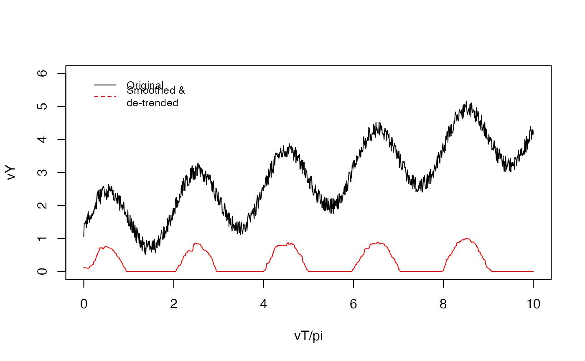

detrendTS.RdFirst, the short-term median filter with size smoothK is applied to smooth the time series.
Two options are available for the subsequent de-trending:
a long-term median filter with the size biasK and linear regression.
No further parameters are required for linear regression.
detrendTS( x, smoothK = 3L, biasK = 51L, peakThr = 0.2, biasMet = c("runmed", "lm", "none") )
| x | a numeric vector with the time series for smoothing. |
|---|---|
| smoothK | an integer, size of the short-term median smoothing filter, default 3L. |
| biasK | an integer, size of the long-term de-trending median filter, default 51L. |
| peakThr | a threshold for rescaling of the de-trended signal, default 0.2. |
| biasMet | a string with the de-trending method, default "runmed". |
a numeric vector with a smoothed time series.
After de-trending, the signal is rescaled to the [0,1] range,
if the global difference between min/max is greater than the threshold peakThr.
library(ARCOS) vT = seq(0, 1, 0.001) * 10 * pi vY = sin(vT)+vT/10 + 1 + runif(length(vT))/2 vYs = ARCOS:::detrendTS(vY, smoothK = 21, biasMet = "lm") plot(vT/pi, vY, type = "l", ylim = c(0,6))legend(0, 6, legend=c("Original", "Smoothed &\nde-trended"), col=c("black", "red"), lty=1:2, cex=0.8, box.lty=0)